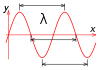

wavelength

Definition: In physics, the wavelength is the spatial period of a periodic wave—the distance over which the wave's shape repeats. It is the distance between consecutive corresponding points of the same phase on the wave, such as two adjacent crests, troughs, or zero crossings, and is a characteristic of both traveling waves and standing waves, as well as other spatial wave patterns. The inverse of the wavelength is called the spatial frequency. Wavelength is commonly designated by the Greek letter lambda (λ).
Source: Wikipedia
Wikipedia Page
Wikidata Page